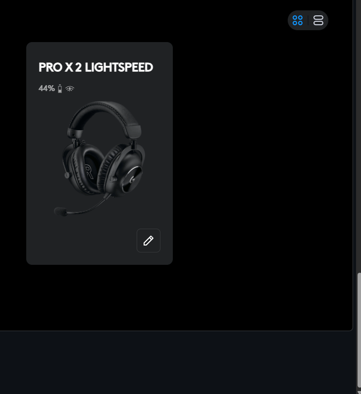
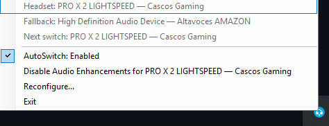

What changes automatically
Headset ON → headset becomes the default output.
Headset OFF → configured fallback becomes the default output.
Unknown state → nothing changes.
Two detection paths, one safety model
The installer observes real device behavior instead of assuming every wireless headset works the same way.
WindowsEndpoint
General mode for headsets whose Windows endpoint changes state, such as the tested Jabra Evolve 65 (`Active ↔ Unplugged`). No vendor software required.
LogitechGHub
Fallback for PRO X 2, whose endpoint can remain `Active` while off. Uses G HUB's unofficial local WebSocket with bounded timeouts.
OFF debounce
Disconnection needs consecutive OFF observations, reducing one-read flapping.
Reconfigure
Handles real Bluetooth reconnect latency and can refresh a recreated endpoint's machine-local Item ID.
Tray controls
Pause/resume automatic switching, reconfigure devices, toggle Windows Audio Enhancements and exit — without reopening the installer.
Normal runtime is not elevated. Audio Enhancements uses a separate UAC helper only when needed.

Verified one-command installation
The bootstrap downloads the latest release ZIP and checksum, verifies SHA-256, extracts the archive and runs the installer.
powershell.exe -ExecutionPolicy Bypass -Command "irm https://raw.githubusercontent.com/Ayerdi/PROX2-AutoSwitch/main/install.ps1 | iex"
Manual packages expose the canonical `Install-AutoSwitch.ps1` entrypoint. Legacy Spanish filenames remain only for backward compatibility.